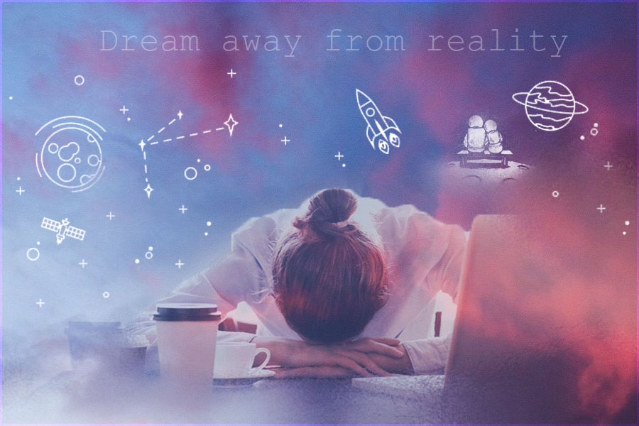

I'm really proud of this image. I think the cloud effects are my favorite part about it. There was so much that I learned from this project. First it was fun to go through different fonts and experiment with them. Then learning about the stroke tool was really helpful because making borders are really useful